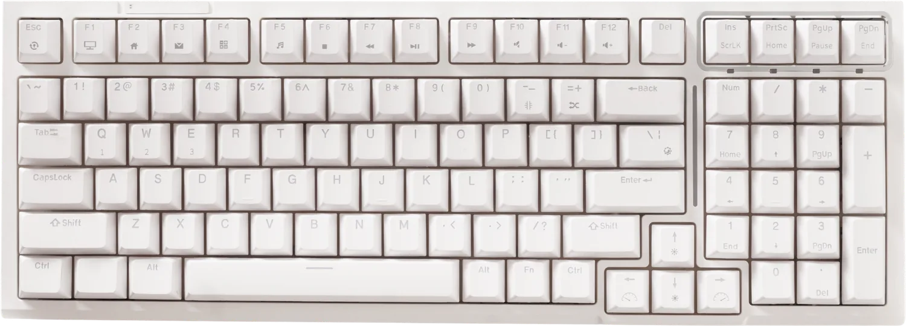
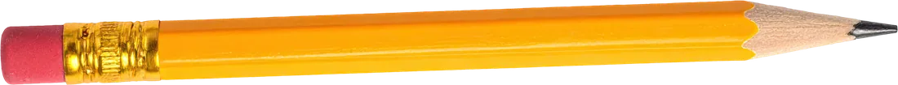
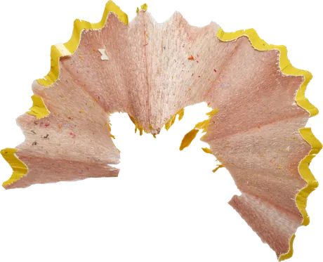
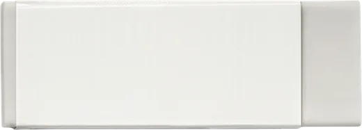
Ruhul Ikram Product Developer & Educator
Saya membangun produk digital dengan bantuan AI, dari analisa, menulis kode, sampai pengujian, dan mengajarkan cara membuatnya.


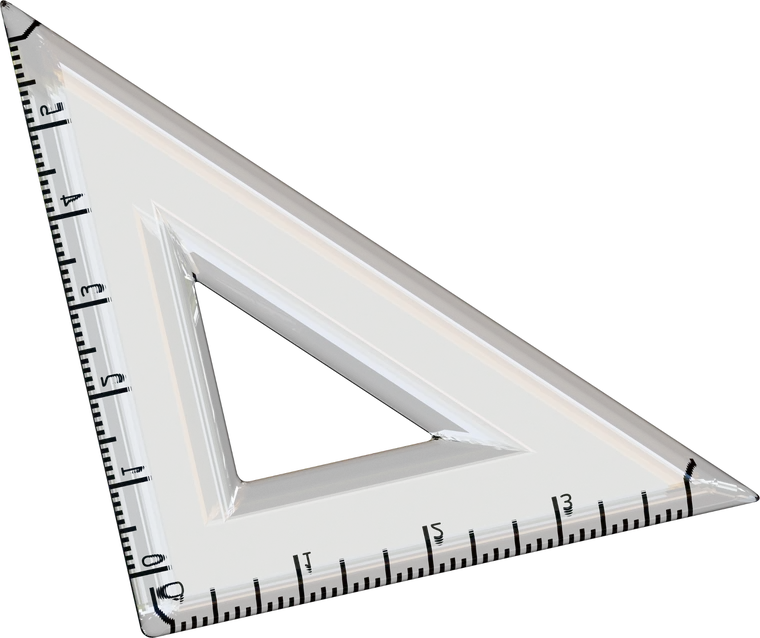
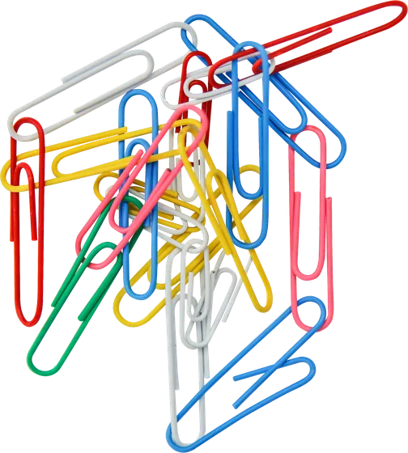
Dari masalah sampai rilis
Saya tidak berhenti di menulis kode. Saya ikut menganalisa kebutuhan, memimpin tim kecil, dan memastikan produknya benar-benar jalan. AI mempercepat pekerjaan saya, keputusan tetap di tangan saya.
-
Analisa
Bicara dengan pengguna, memetakan masalah, menentukan apa yang perlu dibangun lebih dulu.
-
Rancang & bangun
Mendesain alur, lalu menulis kode bersama AI agar prototipe cepat sampai ke tangan pengguna.
-
Uji
Menguji fitur, mencari bug, dan memastikan hasilnya bekerja di perangkat nyata.
-
Rilis & pimpin
Mengatur pembagian kerja tim, merilis, lalu belajar dari data dan masukan pengguna.
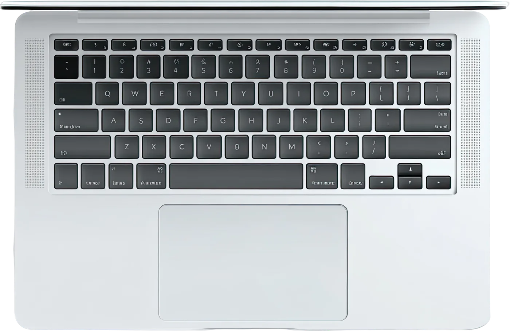
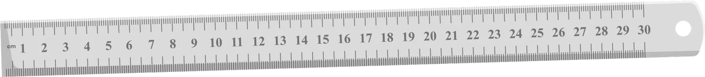
Proyek
Setiap map berisi cerita lengkapnya: masalah, proses, video, dan hasilnya.
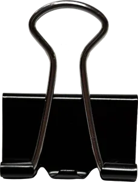
 Web, 2026
Web, 2026
Ruhul OS
Portofolio ini sendiri: meja kerja interaktif yang dibangun tanpa framework.
Proyek berikutnya
Studi kasus sedang disiapkan.
Proyek berikutnya
Studi kasus sedang disiapkan.
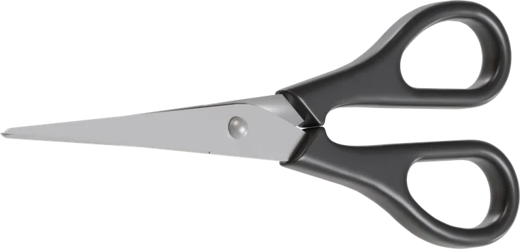
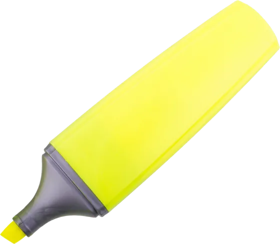
Mengajar & mentoring
Mengajar membuat saya terbiasa menjelaskan hal rumit dengan sederhana. Kemampuan itu sekarang saya bawa ke produk ed-tech dan ke tim yang saya pimpin.
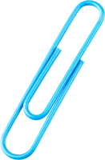
- Guru Simulasi Digital SMK YASTRIF 2, 2023
- Gambar Teknik Otomotif SMK YASTRIF 2, 2023
- Kegiatan mentoring Tempat, tahun


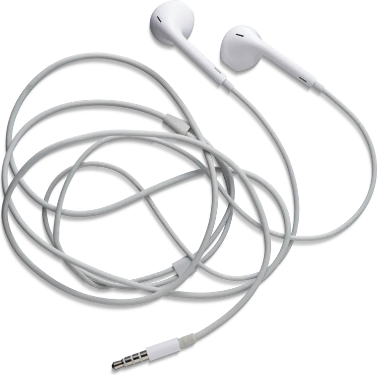
Perjalanan
Jalan saya tidak lurus: kelas, ruang redaksi, lalu produk. Masing-masing mengasah cara saya bekerja.
-
Social Media Manager
Sekolah Prestasi Global, Depok
Menyusun strategi konten dan sistem publikasi untuk brand sekolah.
-
Content Editor
MileniaNews, Jakarta Selatan
Menyunting berita, mendesain konten sosial, dan sempat menjadi host podcast.
-
Guru SMK
SMK YASTRIF 2
Mengajar simulasi digital dan gambar teknik, menyusun RPP, dan mengevaluasi siswa.
-
S1 Teknologi Informasi
Universitas Bina Sarana Informatika
Fokus pada pengembangan software, analisa program, dan web.
Sertifikasi
- MTCNA, MikroTik
- PCAP, Python
- Kompetensi Analis Program
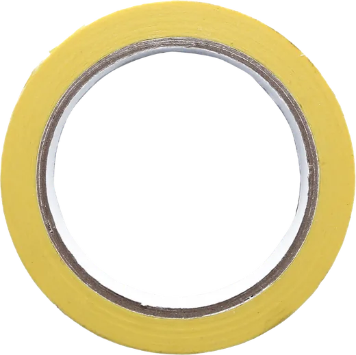
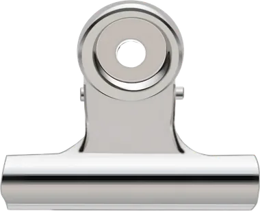
Punya ide produk atau kelas yang ingin dibangun?
Cara paling cepat menghubungi saya lewat LinkedIn atau email.